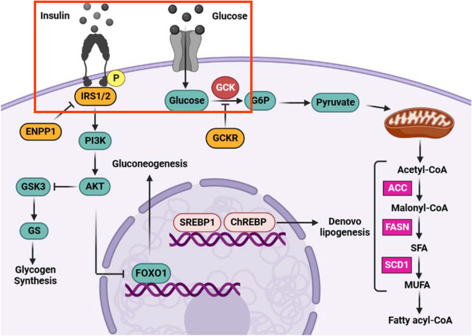

Background
The first step in this pathway is two-fold; the binding of Insulin to the Insulin receptor and the transport of Glucose into the cell aided by the glucose transporter SLC2A2 (GLUT2). In the figure, the receptor are illustrated by graphical objects that are perfectly interpretable by the human brain, but since they are not labeled, they can't be interepted/found by the OCR method that was used to extract information from this pathway. We will need to add data nodes for the receptor and the transporter.
Your Mission
Draw the part of the pathway outlined in red below:

- Start with the draft pathway you saved in the previous step. Select all data nodes and move them down a bit to create space.
- Add a gene product node for the Insulin receptor (INSR).
- The label for the Insulin node is blank, so we need to update the label (ChEBI ID 5931) "Insulin.
- Move the Insulin node towards the top, and connect it with the INSR node using a mim-binding arrow, to indicate the binding of Insulin to the insulin receptor.
- Add a gene product node for the glucose transporter SLC2A2 and position it to the right of INSR.
- There are two glucose nodes. Position them vertically aligned, above and below the SLC2A2 node, offset to the right.
- Select the arrow interaction from the Basic interactions panel or the toolbar and use it to connect the two glucose nodes.
- Right-click on the interaction and add an anchor, or select the conversion interaction and then use the keyboard shortcut Ctrl+R (Command+R on Mac), to add the anchor.
- Select the mim-catalysis interaction from the MIM interactions panel and use it to connect the SLC2A2 node to the anchor point on the conversion arrow, indicating that the transporter controls the transport of glucose into the cell.
- Save your work as a GPML file under File > Save As.
- Drag-and-drop the GPML file below to check if it is correct.